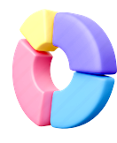

Research

| T World | T Bill Letter | T Data 쿠폰 | T 통화 | T Membership | |
|---|---|---|---|---|---|
| 고객센터 | |||||
| 멤버십 카드 | |||||
| 요금제 변경 | |||||
| 통화 내역 | |||||
| 데이터 구매 | |||||
| 결제 수단 관리 | |||||
| 요금 조회 |


-
앱이 여러 개로 나뉘어 있어서 각 앱의 목적이 명확하지만, 사용자 경험이 복잡할 수 있습니다. 통합된 경험을 제공하기 위해 ‘T World All-in-One’과 같은 통합 앱 개발을 계획 중입니다.
-
‘올레 모바일’이라는 주요 앱에서 대부분의 기능을 통합 제공하며, 멤버십과 TV 관련 앱은 별도로 운영하고 있습니다. 기본적인 통신 관리와 멤버십 관리가 통합되어 있어 사용자 편의성이 높습니다.
-
‘U+ 모바일’에서 기본적인 통신 서비스와 멤버십 관리 기능을 통합 제공하고 있으며, TV 서비스는 별도의 앱으로 제공됩니다. 가족 결합과 같은 추가 기능이 별도의 앱으로 나뉘어 있지만, 주요 서비스는 통합된 앱에서 제공되어 사용자 경험이 일관성 있습니다.
통합 vs. 분리
-
여러 앱으로 나뉘어 있어 각 앱이 특정 기능에 특화되어 있지만, 사용자 입장에서 앱 전환이 번거로울 수 있습니다. 통합 앱 개발이 사용자 편의성을 개선할 것으로 예상됩니다.
-
기본적인 통신 서비스 관리와 멤버십 관리가 통합되어 있어 사용자 편의성이 좋습니다. TV 관련 서비스는 별도의 앱으로 관리되지만, 통신과 멤버십 기능이 통합되어 있어 사용자 경험이 매끄럽습니다.
-
통신 서비스와 멤버십 관리를 주로 ‘U+ 모바일’ 앱에서 처리하며, TV 서비스는 별도의 앱으로 운영합니다. 사용자 경험이 일관되고 주요 기능이 통합되어 있어 편리합니다.
사용자 편의성
SKT는 앱이 여러 개로 나뉘어 있는 점에서 사용자 경험이 복잡할 수 있지만, 이를 통합하는 방향으로 개선하려 하고 있습니다. KT와 LG U+는 기본적인 통신 서비스와 멤버십 관리 기능을 통합된 앱에서 제공하여 사용자 편의성을 높이고 있으며, TV와 같은 부가 서비스는 별도의 앱으로 운영합니다. SKT가 앱 통합을 통해 사용자 편의성을 높인다면, KT와 LG U+와 유사한 사용자 경험을 제공할 수 있을 것입니다.
Goal
-

서비스 통합
데이터 사용량, 요금제, 멤버십 혜택을 하나의 앱에서 통합적으로 관리할 수 있는 기능 제공
-
개인화된 알림
사용자가 필요한 혜택과 놓친 혜택을 실시간으로 알림으로 제공하여 사용자 경험 개선
-
사용자 편의성 향상
복잡한 메뉴 구조를 간소화하고, 직관적인 인터페이스로 사용자 편의성을 극대화
T World connet는 여러 개로 분산된 데이터 관리, 요금제, 멤버십 혜택 기능을 하나로 통합해 사용자에게 일관된 경험을 제공합니다. 필요한 혜택과 놓친 혜택도 쉽게 확인하고 관리할 수 있도록 개선됩니다.
-
통합 관리
여러 앱을 통해 제공되던 서비스를 하나의 앱에서 통합 관리 할 수 있는 점
-

사용자 맞춤 알람
사용자 맞춤형 혜택 알림 및 데이터 사용 예측 기능으로 더 나은 사용자 경험 제공
-

직관적 UI/UX
간소화 된 메뉴와 직관적인 디자인으로 사용자 편의성을 극대화